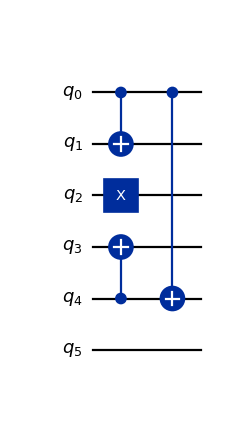
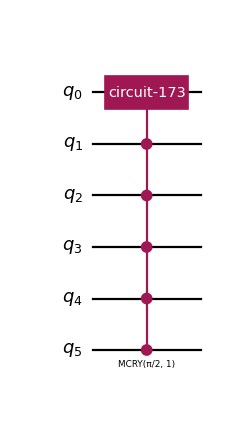
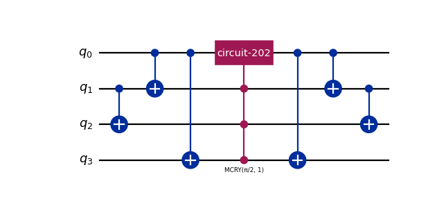

Collision Logic Classes#
This page contain collision-related components shared between the Space-Time Circuits and LQLGA Circuits algorithms. Collision in these algorithms is based on the concept of equivalence classes described in Section 4 of [1], and follows a PRP (permute-redistribute-unpermute) approach. All components of this module may be used for different variations of the Computational Basis State Encoding (CBSE) of the velocity register. The components of this module consist of:
Collision Logic Classes classes that provide information about the lattice discretization and equivalence classes.
Collision Components that implement the small parts of the collision operator.
Collision Logic Classes#
- class qlbm.lattice.spacetime.properties_base.LatticeDiscretization(value, names=<not given>, *values, module=None, qualname=None, type=None, start=1, boundary=None)[source]#
The Lattice Boltzmann discretization used in the simulation.
The only supported discretizations currently are D1Q2 and D2Q4.
- class qlbm.lattice.spacetime.properties_base.LatticeDiscretizationProperties[source]#
Class containing properties of the lattice discretization in the \(D_dQ_q\) taxonomy.
Attributes# Attribute
Description
num_velocitiesThe number of velocities in the discretization. Stored as a
Dict[LatticeDiscretization, int].velocity_vectorsThe velocity profile each of the \(q\) velocity channels. Each vector is \(d\)-dimensional and each entry represents the velocity component of the channel in a particular dimension. Stored as a
Dict[LatticeDiscretization, numpy.ndarray].
- class qlbm.lattice.eqc.EquivalenceClass(discretization, velocity_configurations)[source]#
Class representing LGA equivalence classes.
In
qlbm, an equivalence class is a set of velocity configurations that share the same mass and momentum. For a more in depth explanation, consult Section 4 of [1].Constructor Attributes# Attribute
Description
discretizationThe
LatticeDiscretizationthat the equivalence class belongs to.velocity_configurationsThe
Set[Tuple[bool, ...]]that contains the velocity configurations of the equivalence class. Configurations are stored asq-tuples where an entry isTrueif the velocity channel is occupied andFalseotherwise.Class Attributes# Attribute
Description
massThe total mass of the equivalence class, which is the sum of all occupied velocity channels.
momentumThe total momentum of the equivalence class, which is the vector sum of all occupied velocity channels multiplid by their
LatticeDiscretizationPropertiesvelocity contribution.- Parameters:
discretization (LatticeDiscretization)
velocity_configurations (Set[Tuple[bool, ...]])
- class qlbm.lattice.eqc.EquivalenceClassGenerator(discretization)[source]#
A class that generates equivalence classes for a given lattice discretization.
Constructor Attributes# Attribute
Description
discretizationThe
LatticeDiscretizationthat the equivalence class belongs to.Example usage:
1from qlbm.lattice import LatticeDiscretization 2from qlbm.lattice.eqc import EquivalenceClassGenerator 3 4# Generate some equivalence classes 5eqcs = EquivalenceClassGenerator( 6 LatticeDiscretization.D3Q6 7).generate_equivalence_classes() 8 9print(eqcs.pop().get_bitstrings())
- Parameters:
discretization (LatticeDiscretization)
Collision Components#
- class qlbm.components.common.EQCPermutation(equivalence_class, inverse=False, logger=<Logger qlbm (WARNING)>)[source]#
Applies a permutation to the velocity qubits of an equivalence Sclass in the CBSE encoding.
This is used as part of the PRP collision operator described in section 5 of [1]. Utilized in the
EQCCollisionOperator.Attribute Summary
equivalence_classThe equivalence class of the operator.
inverseWhether to apply the inverse permutation.
Example usage:
from qlbm.components.common import EQCPermutation from qlbm.lattice import LatticeDiscretization from qlbm.lattice.eqc import EquivalenceClassGenerator # Generate some equivalence classes eqcs = EquivalenceClassGenerator( LatticeDiscretization.D3Q6 ).generate_equivalence_classes() # Select one at random and draw its circuit EQCPermutation(eqcs.pop(), inverse=False).circuit.draw("mpl")
(
Source code,png,hires.png,pdf)
- Parameters:
equivalence_class (EquivalenceClass)
inverse (bool)
logger (Logger)
{kind=link}
{kind=link}
- class qlbm.components.common.EQCRedistribution(equivalence_class, decompose_block=True, logger=<Logger qlbm (WARNING)>)[source]#
Redistribution operator for equivalence classes in the CBSE encoding.
The operator is mathematically described in section 4 of [1]. Redistribution is applied before and after permutations, and consists of a controlled unitary operator composed of a discrete Fourier transform (DFT)-block matrix.
Attribute
Summary
equivalence_classThe equivalence class of the operator.
decompose_blockWhether to decompose the DFT block into a circuit.
Example usage:
from qlbm.components.common import EQCRedistribution from qlbm.lattice import LatticeDiscretization from qlbm.lattice.eqc import EquivalenceClassGenerator # Generate some equivalence classes eqcs = EquivalenceClassGenerator( LatticeDiscretization.D3Q6 ).generate_equivalence_classes() # Select one at random and draw its circuit in the schematic form EQCRedistribution(eqcs.pop(), decompose_block=False).circuit.draw("mpl")
(
Source code,png,hires.png,pdf)
The decompose_block parameter can be set to
Trueto decompose the DFT block into a circuit:from qlbm.components.common import EQCRedistribution from qlbm.lattice import LatticeDiscretization from qlbm.lattice.eqc import EquivalenceClassGenerator # Generate some equivalence classes eqcs = EquivalenceClassGenerator( LatticeDiscretization.D3Q6 ).generate_equivalence_classes() # Select one at random and draw its decomposed circuit EQCRedistribution(eqcs.pop(), decompose_block=True).circuit.draw("mpl")
(
Source code,png,hires.png,pdf)- Parameters:
equivalence_class (EquivalenceClass)
decompose_block (bool)
logger (Logger)
{kind=link}
{kind=link}
{kind=link}
{kind=link}
- class qlbm.components.common.EQCCollisionOperator(discretization)[source]#
Collision operator based on the equivalence class abstraction described in section 5 of [1].
Consists of a permutation, redistribution, and inverse permutation of the velocity qubits. This operator is designed to be applied to a single velocity register, which can be repeated depending on the encoding. Used in the
GenericSpaceTimeCollisionOperatorandGenericLQLGACollisionOperator.Attribute
Summary
discretizationThe discretization for which this collision operator is defined.
num_velocitiesThe number of velocities in the discretization.
Simple D2Q4 example usage:
from qlbm.components.common import EQCCollisionOperator from qlbm.lattice import LatticeDiscretization # Select a discretization and draw its circuit EQCCollisionOperator( LatticeDiscretization.D2Q4 ).draw("mpl")
(
Source code,png,hires.png,pdf)
More complex D3Q6 example usage:
from qlbm.components.common import EQCCollisionOperator from qlbm.lattice import LatticeDiscretization # Select a discretization and draw its circuit EQCCollisionOperator( LatticeDiscretization.D3Q6 ).draw("mpl")
(
Source code,png,hires.png,pdf)
- Parameters:
discretization (LatticeDiscretization)
{kind=link}
{kind=link}
{kind=link}
{kind=link}